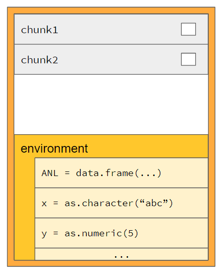
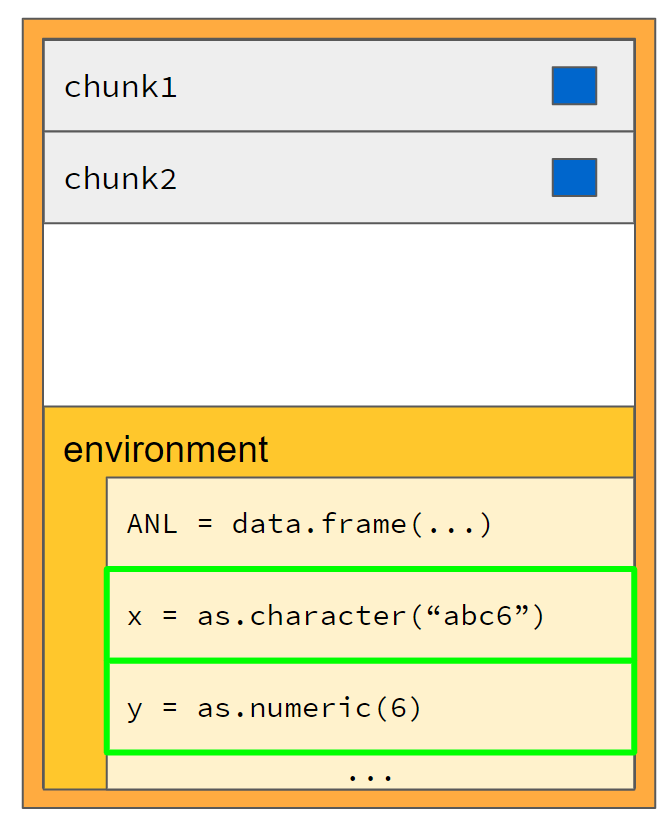

Basic chunks
NEST coreDev
2022-04-22
basic_chunks.RmdThe chunks container
The main concept behind code reproducibility in teal is the chunks container object. This object consists of two elements:
- A stack of quoted R expressions, each called a “chunk”
- An environment carrying variables and their values

The chunks container object allows the evaluation of all expressions it contains in its own isolated environment, thus having no side effects on the surrounding environment.
The next sections will explain what a chunk is and how it is evaluated.
What is a chunk?
A quoted R expression is a necessary step to create a
chunk object, which is an R6 object of class
chunk_call. Quoted R expressions can be created in many
different ways, four of which will be described:
a <- 3
# Creating a chunk by quote ------------------------------
expr_a <- quote(sum(a, a))
print(expr_a)## sum(a, a)
# Creating a chunk by substitute ------------------------------
expr_b <- substitute(b <- sum(a, a))
print(expr_b)## b <- sum(a, a)
# Creating a chunk by call -------------------------------
expr_c <- call("sum", a, a)
print(expr_c)## sum(3, 3)
# Creating a chunk by rlang::expr -------------------------------
expr_d <- rlang::expr(sum(a, a))
print(expr_d)## sum(a, a)To evaluate the expressions of class call or an
assignment given by class <- above, R uses the
eval function. This function evaluates each single
call inside the current environment by default, but it does
contain a parameter to input a specific environment argument to execute
the expression in.
a <- 3
expr_a <- quote(sum(a, a))
expr_b <- substitute(b <- a + a)
eval(expr_a)## [1] 6## [1] 6chunk objects can be created and evaluated using the
expressions above as follows:
chunk_1 <- teal.code::chunk$new(expression = expr_a)
chunk_1$eval()## [1] 6## [1] 6Note that teal.code::chunk is merely an alias for
teal.code::chunk_call. And so the following code is the
same as the above code:
chunk_1 <- teal.code::chunk_call$new(expression = expr_a)
chunk_1$eval()## [1] 6
chunk_2 <- teal.code::chunk_call$new(expression = expr_b)
chunk_2$eval()
print(b)## [1] 6Motivation for the chunk (chunk_call) object
A quoted R expression can simply be evaluated with the base function,
eval, as demonstrated above. But additional functionalities
are needed for the chunks container to work. Here are some
additional methods, besides eval, that the
chunk object contains:
# answers the question of whether the code executed without error
chunk_1$is_ok()## [1] TRUE
# answers the question of whether the code has been executed
chunk_1$is_evaluated()## [1] TRUE
# returns error messages, if any, in the form of a string
chunk_err <- teal.code::chunk_call$new(expression = quote(stop("error in chunk")))
chunk_err$get_errors() # no error before evaluation## character(0)
chunk_err$eval()
chunk_err$get_errors()## [1] "error in chunk"Internally, the chunks container will convert quoted
base R expressions into chunk objects as they are pushed
in.
Creation of a chunks container object
A chunks container may be initialized as an empty container.
# initializing code chunks -------------------------------------------
chunks_container_empty <- teal.code::chunks_new()However, it can also be initialized with a specific environment.
# initializing code chunks -------------------------------------------
env <- new.env()
env$var_to_be_erased <- "some_value"
env$x <- 0
chunks_container <- teal.code::chunks_new(envir = env)
# method to list all variables in the chunks environment
chunks_container$ls()## [1] "var_to_be_erased" "x"
# function to add a chunk to a chunks container object
teal.code::chunks_push(chunks = chunks_container, expression = quote(print(x)))
# function to get all expressions from a chunks container code stack
teal.code::chunks_get_rcode(chunks_container)## chunk_1
## "print(x)"
At any point, a chunks container can be reset. Resetting means that all expressions in its code stack will be emptied and its environment will be overridden by the inputted environment, which defaults to the parent environment.
env <- new.env()
env$anl <- data.frame(left = c(1, 2, 3), right = c(4, 5, 6))
env$x <- "abc"
env$y <- 5
teal.code::chunks_reset(envir = env, chunks = chunks_container)
# note that the variable var_to_be_erased is removed
chunks_container$ls()## [1] "anl" "x" "y"
# this function is used to extract values of variables in a chunks container environment
# note that the variable x is overriden
teal.code::chunks_get_var("x", chunks = chunks_container)## [1] "abc"
# note that the code stack has been emptied
teal.code::chunks_get_rcode(chunks_container)## character(0)As mentioned above, the teal.code::chunks_push function
is used to push expressions into the chunks container.
teal.code::chunks_push(chunks = chunks_container, expression = substitute(y <- y + 1))
teal.code::chunks_push(chunks = chunks_container, expression = substitute(x <- paste0(x, y)))
As mentioned above, the teal.code::chunks_get_rcode
function is used to get all expressions pushed into the chunks
container.
teal.code::chunks_get_rcode(chunks_container)## chunk_1 chunk_2
## "y <- y + 1" "x <- paste0(x, y)"Executing the code stored in the stack
The chunks container also has an eval method which runs
all code inside the chunks container. This method is wrapped inside the
function teal.code::chunks_safe_eval. It evaluates all
chunks inside the container in the order they were pushed and returns
the value of the last evaluated expression. It is not possible to change
the order or run just some of the expressions.
teal.code::chunks_safe_eval(chunks_container)## [1] "abc6"
teal.code::chunks_get_var("x", chunks = chunks_container)## [1] "abc6"
teal.code::chunks_get_var("y", chunks = chunks_container)## [1] 6
It is still possible to push more code expressions into a chunks container that has already been evaluated. These newly added expressions may also modify the environment.
teal.code::chunks_push(chunks = chunks_container, expression = quote(z <- 10))
teal.code::chunks_get_rcode(chunks_container)## chunk_1 chunk_2 chunk_3
## "y <- y + 1" "x <- paste0(x, y)" "z <- 10"
teal.code::chunks_safe_eval(chunks_container)## [1] 10
chunks_container$ls()## [1] "anl" "x" "y" "z"
teal.code::chunks_get_var("z", chunks = chunks_container)## [1] 10Note that code that have already been evaluated will not be re-evaluated when newly added code is evaluated.
teal.code::chunks_push(
chunks = chunks_container,
expression = quote(print("I will only be evaluated once"))
)
teal.code::chunks_safe_eval(chunks_container)## [1] "I will only be evaluated once"## [1] "I will only be evaluated once"
teal.code::chunks_push(chunks = chunks_container, expression = quote(rm(z)))
# note that the string "I will only be evaluated once" is not printed again
teal.code::chunks_safe_eval(chunks_container)## NULL
# z is removed
chunks_container$ls()## [1] "anl" "x" "y"Handling errors (and warnings)
The function teal.code::chunks_safe_eval is named
"safe_eval" because it performs an additional step to
handle errors by calling another method of the chunks container object,
validate_is_ok. If any error occurs during the evaluation
of expressions pushed into the chunks container, the error is handled
and stored in the chunk object that contains the
expression, and thus no error is thrown to the calling environment.
The function teal.code::chunks_is_ok will return
TRUE if all evaluated expressions in the chunks container
evaluated without throwing an error.
teal.code::chunks_validate_is_ok returns a useful
validate(need(...)) which a shiny app will use to display
an error message in the UI instead of crashing the app.
teal.code::chunks_is_ok(chunks_container)## [1] TRUE
teal.code::chunks_validate_is_ok(chunks = chunks_container)
# Trying an error inside a chunk ------------------------
teal.code::chunks_push(chunks = chunks_container, expression = quote(stop("ERROR")))
teal.code::chunks_safe_eval(chunks_container)## Error: The following errors(s) occurred:
## ERROR
##
## when evaluating the following code:
## stop("ERROR")
teal.code::chunks_is_ok(chunks_container)## [1] FALSE
# internally, teal.code::chunks_safe_eval calls teal.code::chunks_validate_is_ok before returning
teal.code::chunks_validate_is_ok(chunks = chunks_container)## Error: The following errors(s) occurred:
## ERROR
##
## when evaluating the following code:
## stop("ERROR")The use of the teal.code::chunks_safe_eval is good
practice in a reactive context. Since errors are not thrown to the
environment calling the chunks container, it will not crash the shiny
app, which is a good thing. However, the shiny app will also not know
that an error has occurred. Calling
teal.code::chunks_safe_eval instead of the
eval method of the chunks container ensures that a
validation step occurs.
Tutorial Summary
In summary:
- chunks containers host code snippets
- chunks containers host their own environment
- chunks container can be accessed to retrieve variables from the
environment using
teal.code::chunks_get_var - expressions can be added to the chunks container by
teal.code::chunks_push - code inside a container is executed by its
evalmethod. -
teal.code::chunks_is_okallows checking for execution errors -
teal.code::chunks_validate_is_okallows a shiny app to display a validate message of the errors in the UI -
teal.code::chunks_safe_evalwill evaluate all snippets of the chunks container and then callvalidate(need(...))to let a shiny app silently handle any errors that occurred so that error messages can be outputted in the UI.
For more information about the implementation of chunks inside of shiny/teal module, please go on to the Advanced chunks article.